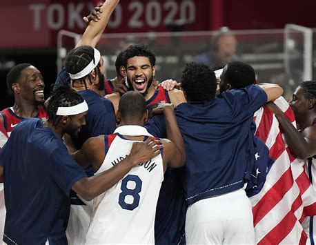

The NBA Today has many players with special talents on their respective teams. But, their is often an argument on who the top 10 players are. With the development of European basketball, we now have some of the most dominant players worldwide. This is my official top 10 NBA players list.
| Player | Points | Assists | rebounds |
|---|---|---|---|
| Nikola Jokic | 26.4 | 12.4 | 9.0 |
| Luka Doncic | 33.9 | 9.2 | 9.8 |
| Joel Embiid | 34.7 | 11.0 | 5.6 |
| Shai Gilgeous Alexander | 30.1 | 5.5 | 6.2 |
| Giannis Antetekoumpo | 30.4 | 11.5 | 6.5 |
| Jayson Tatum | 26.9 | 8.1 | 4.9 |
| Anthony Edwards | 25.9 | 5.4 | 5.1 |
| Stephen Curry | 26.4 | 4.5 | 5.1 |
| Kevin Durant | 27.1 | 6.6 | 5.0 |
| Lebron James | 25.7 | 7.3 | 8.3 |
The olympics has just happened recently and team USA took home gold. Throughout the olympics though, many overseas players managed to make a name for themselves and show the development of their country. It leaves many players and fans wondering what this level of basketball will develop into within the next 20 years. We hope to continue seeing development and competitivenenn among these countries.
